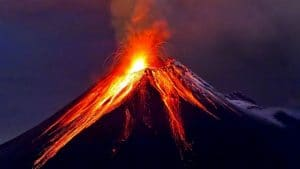

Los llamados desastres naturales son fenómenos de distintos ámbitos de la naturaleza que,
muchas veces, ocurren de forma inesperada, provocando todo tipo de daños para la humanidad.
Ocurren de diferentes maneras y por diversos causales, provocando muerte y destruccion en
todo el mundo.
Un desastre natural es aquél causado por la naturaleza. Así de simple y dentro de esta categoría
encontramos por ejemplo desde volcanes, terremotos, huracanes, tifones, tsunamis o avalanchas a
sequías o a edades del hielo, entre otras.
Por otra parte, hay otros desastres que también son el resultado de determinados aspectos de la
naturaleza como algunas enfermedades, bacterias y virus, que obviamente, también se consideran
como desastres de tipo natural.
Cabe señalar, por último, que hay otros desastres (recuerda que siempre son desastres para la
humanidad originados por la naturaleza) que en cierta medida, se consideran muy próximos a esta
clasificación a pesar de que los Hombres tienen gran participación y buena parte e la
responsabilidad.
Los desastres naturales tienes las características de ser originados por la naturaleza causando Los distintos tipos de desastres naturales que existen pueden clasificarse en cuatro grupos: Dentro de este grupo s e clasifican a todos aquellos que se originan en el agua, es decir, en los mares Este tipo de desastre natural puede darse en muchas variaciones y todas ellas están relacionadas Dentro de los desastres naturales meteorológicos tenemos por ejemplo los Tifones, frentes fríos Son todos aquellos desastres naturales que se forman o surgen de las entrañas mismas del planeta Dentro de este grupo podemos encontrar las avalanchas, derrumbes, tormentas solares, terremotos, Los desastres naturales biológicos son provocados por alguna circunstancia especial dentro Otros ejemplos pueden ser pestes, epidemias e infecciones como la fiebre porcina o la gripe aviar.
situaciones que afectan a la humanidad como, por ejemplo:
TIPOS DE DESASTRES NATURALES
y océanos del mundo. Ocurren como consecuencia de la acción de las aguas y los ejemplos más
claros son el tsunami, inundaciones u oleajes tempestuosos.
;;
con el clima.
Estos pueden predecirse con cierta anticipación gracias a las modernas tecnologías que definen
el comportamiento del clima y analizan la posibilidad de que lleguen a afectar un lugar determinado.
y cálidos, el niño y la niña, tornados, tormentas tropicales, huracanes, nevadas, granizo, sequía
e inundaciones por lluvia.
Tierra o de la superficie terrestre.

erupciones volcánicas, incendios y hundimientos de tierra, entre algunos otros.
del reino animal y de algún modo afectan al ambiente y a la humanidad.
El desastre natural biológico más importante y representativo es la tan compleja marea roja.
Los fenómenos naturales, como las lluvias o tormentas, son considerados desastres naturales
cuando exceden el límite de lo que, en otras circunstancias, se consideran normales.
Los desastres naturales son causados por el hombre al modificar el estatus quo del medio
ambiente e interactuar erróneamente en este.
La sobre explotación de los recursos naturales genera muchos problemas tales como la contaminación,
el cambio climático y asentamientos en zonas naturales no propicias para ello. Estas acciones terminan
impactando negativamente el medio ambiente generando situaciones de ptencial desastre que luego decimos es “natural”.